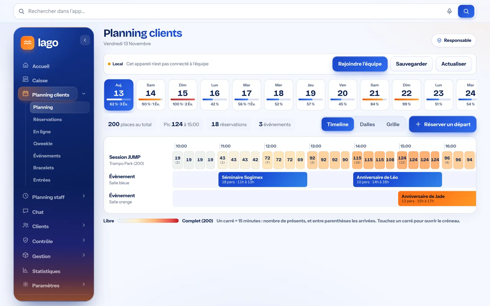
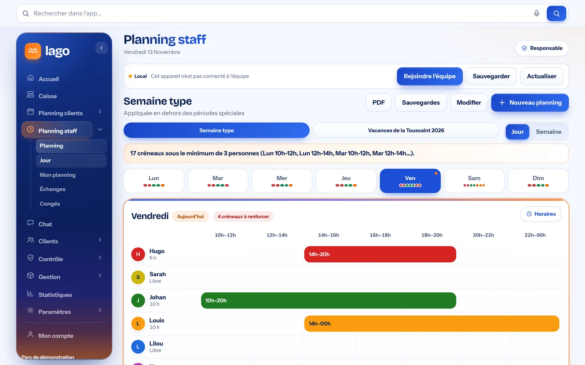
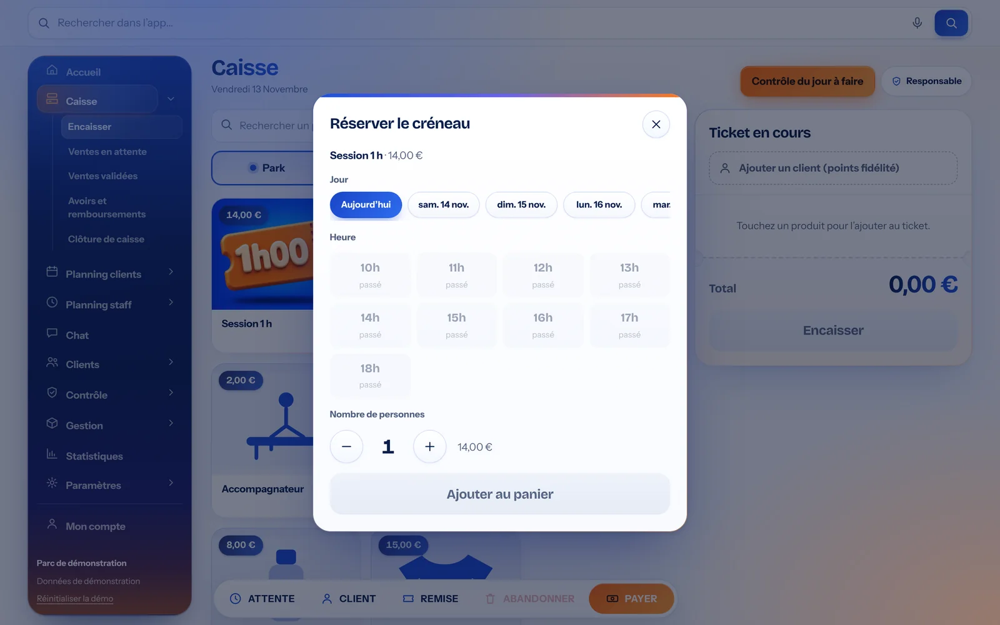
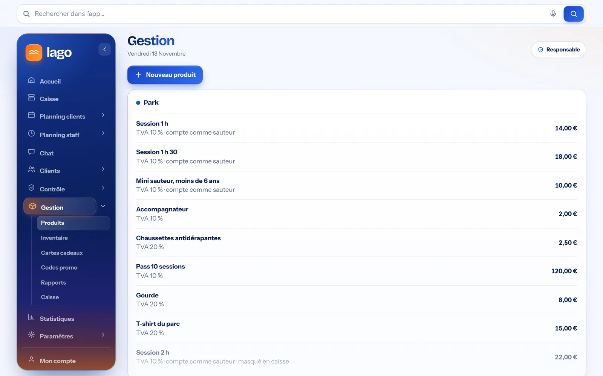
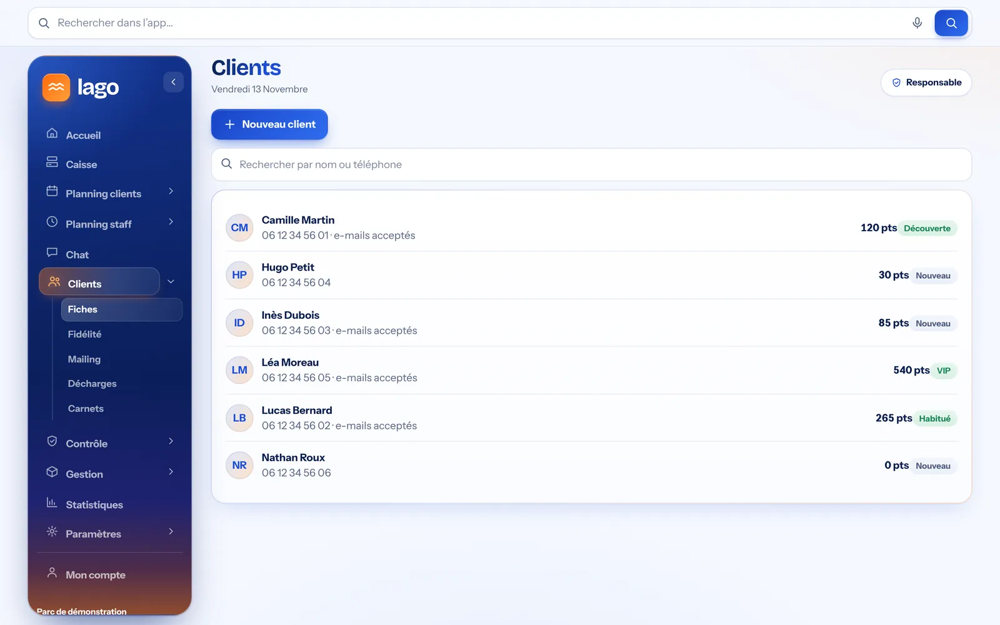
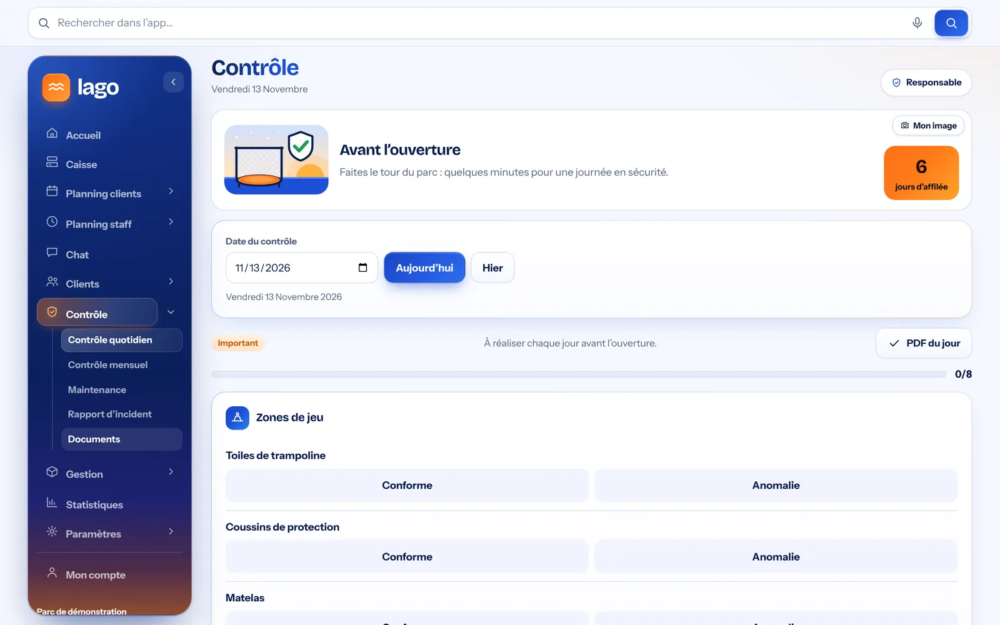
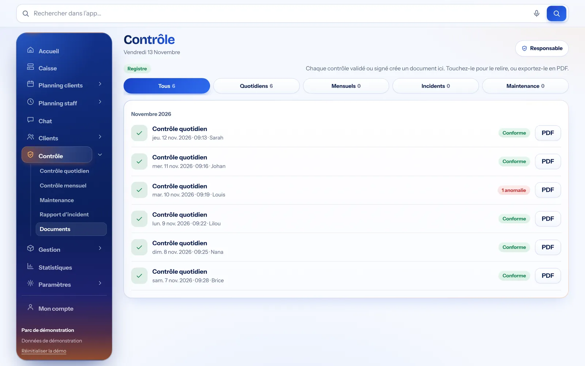
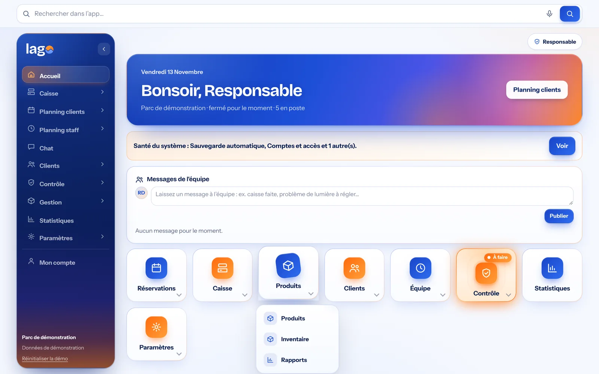
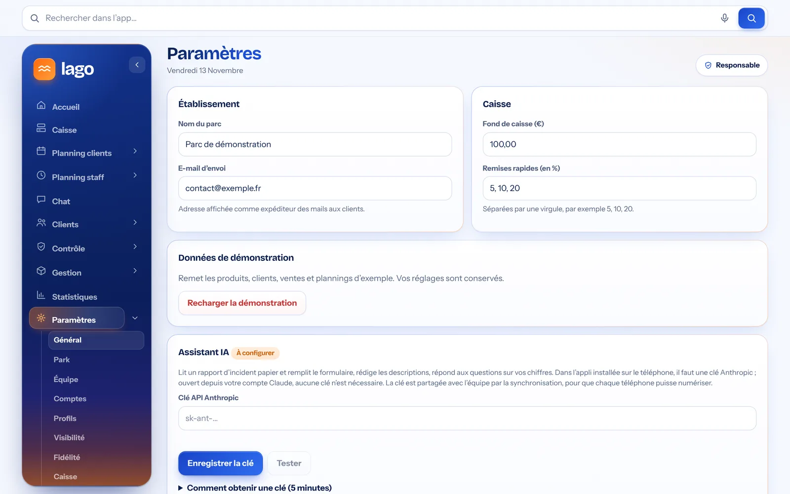

Découvrez Lago, écran par écran
Pas de maquette : voici le vrai logiciel, tel que votre équipe l’utilisera, avec des données de démonstration. Cliquez sur une image pour l’agrandir.
Vidéo réelle de Lago · 24 secondes · données de démonstration
Un planning pour vos clients, un autre pour votre équipe
Le planning clients
Les réservations et la jauge de votre établissement, par créneaux de 15 minutes. Chaque créneau se colore à mesure qu’il se remplit, jusqu’à « complet ».


Capture réelle de Lago · données de démonstration


Le planning de l’équipe
Les horaires de chaque employé, la semaine type, les vacances, les congés et les échanges. Lago signale les créneaux où il manque du monde.


Capture réelle de Lago · données de démonstration


Deux plannings vraiment séparés : vos clients ne se mélangent jamais avec les horaires de votre équipe.
Au comptoir
La caisse
Articles illustrés par catégorie, ticket toujours visible, client fidélité, remise, attente et encaissement en quelques gestes.
- Catégories Park, Bar, Événement et Gestion
- Recherche d’article
- Plusieurs règlements et rendu monnaie

Capture réelle de Lago · données de démonstration
Réserver un créneau depuis la caisse
Un clic sur une session ouvre le choix du jour, de l’heure avec les places restantes et de l’heure de départ. Le bracelet est attribué automatiquement.
- Places restantes par heure et par quart d’heure
- Bracelet de couleur selon l’horaire
- Nombre de personnes, puis ajout au ticket


Capture réelle de Lago · données de démonstration
Les articles et la TVA
Chaque article a son prix, sa catégorie et son taux de TVA. Les sessions comptent dans la jauge du parc.
- TVA par article
- Articles « compte comme sauteur »
- Inventaire et cartes cadeaux


Capture réelle de Lago · données de démonstration
Des clients qui reviennent
Les fiches clients
Retrouvez un client par son nom ou son téléphone, avec ses points et son accord pour les e-mails.
- Recherche instantanée
- Points et statut de fidélité
- Mailing


Capture réelle de Lago · données de démonstration
La fidélité
1 € dépensé = 1 point, des paliers de récompense et un e-mail automatique au client qui l’a accepté.
- Paliers personnalisables
- Remise sur le ticket suivant
- Classement des meilleurs clients

Capture réelle de Lago · données de démonstration
En règle, sans paperasse
Le contrôle avant l’ouverture
L’équipe valide chaque point sur tablette ou téléphone. Une anomalie se signale en un geste.
- Zones et points personnalisables
- Série de jours contrôlés
- PDF du jour


Capture réelle de Lago · données de démonstration
Le registre des contrôles
Chaque contrôle validé crée un document PDF, rangé par date et par type.
- Quotidien, mensuel, maintenance, incidents
- Conforme ou anomalie
- PDF à télécharger


Capture réelle de Lago · données de démonstration
La mise en conformité de la caisse
Sept étapes guidées, jusqu’à l’attestation de l’éditeur sur le modèle officiel.
- Clôtures scellées
- Vérification d’intégrité
- Archive annuelle

Capture réelle de Lago · données de démonstration
Tout votre établissement en un coup d’œil
L’accueil
Le contrôle du jour, l’équipe en poste, les messages et l’accès rapide à chaque module.
- Messages d’équipe
- Santé du système
- Raccourcis vers chaque module


Capture réelle de Lago · données de démonstration
Les statistiques
Chiffre d’affaires, tickets, panier moyen, ventes par catégorie et produits les plus vendus.
- Aujourd’hui, 7 jours, 30 jours, mois, année
- Chiffre d’affaires par sauteur
- Meilleures ventes

Capture réelle de Lago · données de démonstration
Les réglages
L’administrateur personnalise l’établissement, la caisse, les profils et ce que chacun peut voir.
- Établissement et caisse
- Profils et visibilité
- Données de démonstration


Capture réelle de Lago · données de démonstration
Dans la poche de toute l’équipe
Lago s’installe comme une application sur les téléphones : chacun retrouve son planning, la caisse ou le contrôle du jour.

Accueil

Caisse

Planning clients

Contrôle
Envie de le voir sur vos activités ?
Une démonstration gratuite et sans engagement, avec vos tarifs et vos horaires.